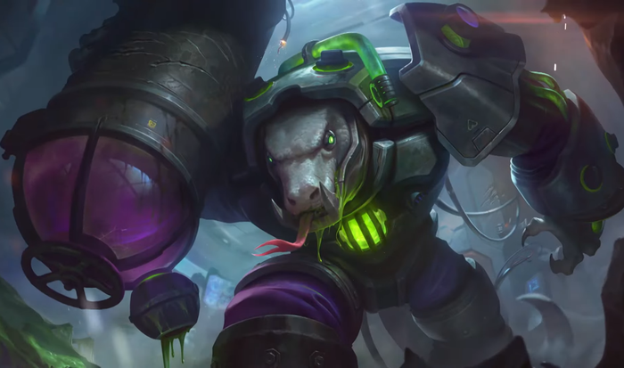
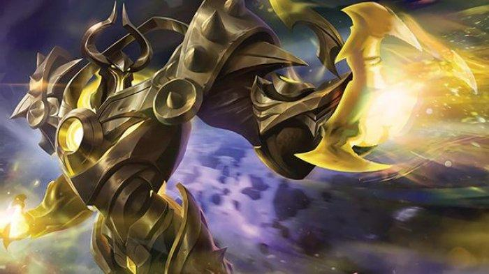

Mobile Legend S15
Seperti yang kita tahu, Mobile Legend telah memasuki S15. Apa saja yang menjadi plus dan minus di season ini ? Berikut pembahasannya :
1. Nerf hero
Contoh hero yang di nerf di season ini adalah Lolita
Hal ini mungkin yang menjadikan marksman dan assasin menjadi masuk meta lagi. Lolita mengalami nerf pada hpnya. Banyak yang mengatakan bahwa pada season ini akan menjadi "Rise off marksman". Season ini mungkin akan menjadi sulit bagi player tank. Jujur season sebelum ini mungkin bisa memungkinkan beberapa player tank untuk bermain solo, tetapi untuk season ini mungkin akan sangat sulit
2. Meta
Pada season ini Mobile Legend bisa dikatakan hampir mendekati Dota2 dari segi meta. Hal ini dikarenakan semua hero pada season ini bisa ditaruh di lane dengan bebas. Contoh :
1. Pada season ini posisi grock dan uranus bisa ditaruh/diposisikan sebagai offlaner
|  |  |
2. Silvanna dengan role fighter sekarang bisa menjadi support

3. Buff
Pada season ini marksman tidak lagi mengandalkan late game hal ini dikarenakan adanya buff merah yang memberikan true damage. Mungkin bagi player marksman ini adalah kabar yang menggembirakan tapi bagi player tank ini mungkin akan menjadi PR tersendiri karena mereka harus memberikan preasure yang lebih lebih lagi kepada marksman lawan. Apalagi sekarang adanya muncul meta hyper carry. Meta hyper carry yaitu meta yang hanya menitiktumpukan damage pada satu hero dan 4 hero yang lain bertugas mensupport hero tersebut